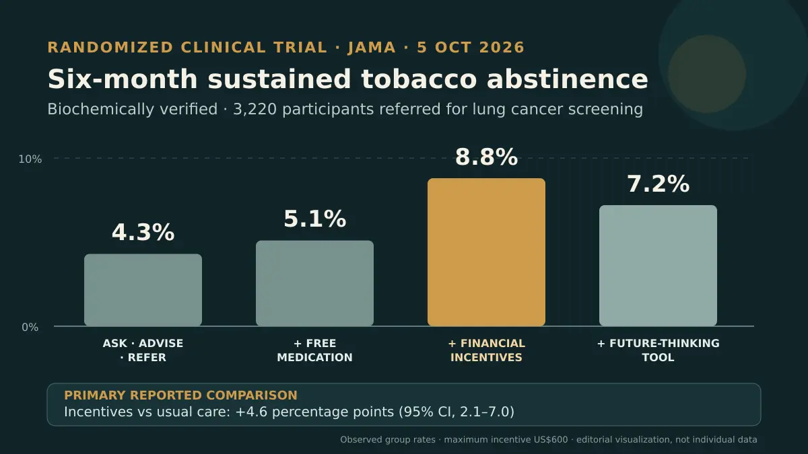

Bu belirli nüfus ve programda mali teşvik grubu, altı aya kadar gözlenen en yüksek sürekli bırakma oranına ulaştı. Bulgular hizmet tasarımıyla ilgilidir, bireysel başarı garantisi değildir; danışmanlık ve ilaçlar kanıta dayalı seçenekler olmaya devam eder ve seçim kişiye göre yapılmalıdır.

Yeni çalışma neydi?
Joanna L. Hart, Anil Vachani, Christine M. Neslund-Dudas ve arkadaşları, pragmatik randomize çalışmalarının sonuçlarını 5 Ekim 2026'da JAMA'da yayımladı. Araştırma ABD'de dört sağlık sistemi ve beş merkezde yapıldı. Bilgisayarlı tomografiyle akciğer kanseri taramasına yönlendirilen; kendisini Siyah veya Hispanik olarak tanımlayan, kırsal bölgede yaşayan ya da düşük sosyoekonomik düzeyde bulunan sigara kullanıcıları çalışmaya alındı. Kayıt Mayıs 2021'de başladı, son takip Nisan 2025'te tamamlandı. [1]
Randomize edilen 3.259 kişiden 3.220'si birincil analize girdi. Ortanca yaş 61,1'di ve katılımcıların yüzde 60,3'ü kadındı. Analiz nüfusunun yüzde 25,5'i Siyah, yüzde 8,9'u Hispanik, yüzde 38,8'i kırsal bölgede yaşıyordu; yüzde 74,9'u düşük sosyoekonomik düzeydeydi ve yüzde 55,5'i başlangıçta günde 10'dan fazla sigara içtiğini bildirdi. [1]
Pragmatik tasarım, stratejileri gerçek bakım koşullarında karşılaştırmak için güçlüdür; fakat bu seçilmiş grubun bütün sigara kullanıcılarını veya bütün ülkeleri temsil ettiği söylenemez. Protokol daha önce yayımlanmış, çalışma NCT04798664 numarasıyla kaydedilmişti. Protokolün önceden yayımlanması, planlanan soru ve sonlanımın nihai raporla karşılaştırılmasını sağlar; olası sapmaların tam değerlendirmesi için ise sonuç makalesinin tam metni gerekir. [1] [2]
Dört grup ne aldı?
İlk gruba olağan bakım olarak “sor, öner, yönlendir” yaklaşımı uygulandı. İkinci gruba ücretsiz nikotin replasmanı ile vareniklin veya bupropion için geri ödeme eklendi. Üçüncü grup bunlara ek olarak, biyokimyasal doğrulamaya bağlı ve toplam 600 dolara kadar çıkan mali teşvik aldı. Dördüncü gruba ise aynı paketle birlikte, kişinin gelecekteki sağlığını düşünmesini destekleyen mobil bir araç verildi. [1]
Birincil sonlanım yalnızca kişinin beyanı değildi. Altı aya kadar sürekli tütün bırakma; kotinin, anabazin veya karboksihemoglobin ile doğrulandı. Dolayısıyla bulgu, çok bileşenli bir hizmet programı ve sıkı tanımlanmış bir sonuç hakkındadır. Özetten her temasın, ilaç türünün, aracı kullanma düzeyinin veya katılımcı deneyiminin ayrı katkısını çıkarmak mümkün değildir. [1]
Ana sayılar ne anlatıyor?
Doğrulanmış sürekli bırakma oranları dört grupta sırasıyla yüzde 4,3; 5,1; 8,8 ve 7,2 idi. Mali teşvik eklenmesi olağan bakıma göre düzeltilmiş 4,6 yüzde puanlık fark oluşturdu; yüzde 95 güven aralığı 2,1 ile 7,0, p değeri 0,001'den küçüktü. Ücretsiz ilaç grubuna göre fark 4,1 yüzde puandı; güven aralığı 1,7 ile 6,4, p değeri yine 0,001'den küçüktü. [1]
Bunlar mutlak farklardır; tek bir kişi için başarı sözü vermez. Teşvik grubunda bile katılımcıların çoğu altı ayda birincil sonlanıma ulaşmadı. Mobil araç grubundaki yüzde 7,2 oranı yüzde 8,8'den düşük görünse de özet bu iki grup için doğrudan istatistiksel karşılaştırma vermiyor. Bu nedenle mobil aracın bırakmayı azalttığı sonucu çıkarılamaz.
Sonuç, ilacın etkisiz olduğunu mu söylüyor?
Hayır. Bu programda ücretsiz ilaç teklifinin olağan bakıma eklenmesi istatistiksel üstünlük göstermedi: düzeltilmiş fark 0,5 yüzde puan, yüzde 95 güven aralığı −1,7 ile 2,6 ve p değeri 0,66 idi. Bu karşılaştırma, ilacı uygun biçimde kullanan bir kişideki biyolojik etkiyi değil; kabul, ilaca ulaşma ve tedaviye bağlılığın da sonucu etkilediği gerçek bakım yolunda bir teklif ve ödeme politikasını sınar. [1] [2]
CDC, danışmanlık ve ilacın ayrı ayrı etkili olduğunu, birlikte kullanıldıklarında kalıcı bırakma için en iyi şansı sunduğunu belirtmeye devam ediyor. [3] Yeni bulgunun doğru yeri ilaç tedavisini dışlamak değil, hizmetin nasıl sunulduğunu sorgulamaktır. Nikotin replasmanı, vareniklin veya bupropion seçimi kişinin tıbbi öyküsü, tercihi ve sağlık profesyonelinin değerlendirmesine bağlıdır.
Sınırlılıklar ve kanıt düzeyi nedir?
Randomizasyon ve biyokimyasal doğrulama, çalışmanın önemli güçlü yanlarıdır; aynı program içindeki bu stratejileri karşılaştırmak için doğrudan kanıt sağlar. Bununla birlikte birincil sonlanım altı aydı. Özetten farkın daha uzun süre kalıcı olup olmadığını veya program maliyetinin elde edilen sonuca değip değmediğini bilemiyoruz. Akciğer taraması dışındaki kişilere, başka sağlık sistemlerine ve farklı ekonomik yapılara genelleme ayrıca sınanmalıdır. [1]
600 dolara kadar teşvik, ABD'deki araştırma müdahalesinin bir parçasıydı; standart bir tutar ya da genel klinik öneri değildir. Ayrıca sonuç makalesinin tam metnine bu inceleme sırasında erişilemedi. Bu nedenle değerlendirme yapılandırılmış özet, anahtar noktalar, açık protokol ve resmî eğitim kaynağıyla sınırlıdır. Yan etkiler, uygulamanın ayrıntıları, alt gruplar ve ikincil sonuçlar tam metin üzerinden ayrıca incelenmelidir.
Okur için pratik mesaj nedir?
Hizmet yöneticileri için sonuç, yalnızca ilaç maliyetini kaldırmanın her zaman yeterli olmayabileceğini; motivasyon, takip ve sonucun ölçülmesi gibi unsurların dikkatle sınanması gerektiğini gösteriyor. Sigarayı bırakmak isteyen kişi için mesaj, mali ödül beklemek değildir. Planlama, davranışsal destek ve uygun ilaç tedavisi geçerli seçeneklerdir; bir kaymadan sonra yeniden denemek de sürecin olağan bir parçasıdır. [3]
Bu çalışma program düzeyinde bir soruya yanıt verir, kişisel reçete yazmaz. Bir hekim veya bırakma hizmetiyle görüşmek, uygun yöntemi seçmeye ve etkileşimleri ya da kullanıma engel durumları değerlendirmeye yardımcı olabilir. Akciğer kanseri taramasına yönlendirme ile sigarayı bırakma desteği de birbirinin alternatifi değildir; bırakmak, kişinin taramaya uygunluğunun değerlendirilmesinin yerini tutmaz.
Mali teşvik, politika düzeyinde ek sorular doğurur: Kimler uygun sayılacak, bırakma nasıl doğrulanacak, eşit erişim nasıl korunacak ve ödeme bittiğinde etki sürecek mi? Çalışma, belirli koşullarda bu yaklaşımın dikkate değer olduğunu gösteriyor; uygulama, adalet ve maliyet-etkililik hakkında karar vermek için ek verilere ve her sağlık sisteminin kendi bağlamına ihtiyaç vardır.
Birincil kaynaklar
JAMA'da hakemli sonuç makalesinin özeti, anahtar noktaları ve bibliyografik bilgileri; yayımlanmış tam protokol ve CDC'nin resmî sayfası incelendi. JAMA sonuç makalesinin tam metnine erişilemedi; bu nedenle özette yer almayan ayrıntılar değerlendirilmedi ve bağımsız uzman hakemliği iddia edilmez.
Bu yazı genel bilgilendirme amaçlıdır; kişiye özel tanı veya tedavinin yerini tutmaz.